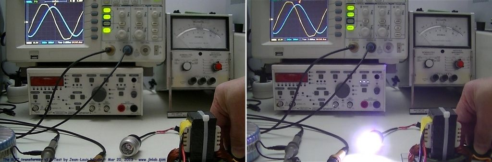

DLE-TEST17 : Mesures
complètes sur le Transformateur Bi-Toroïde de Heins (BiTT v1.5) créé le 9 Février 2013 - JLN
Labs - Mis à jour le 20 Mars 2013 All informations and
diagrams are published freely (freeware) and are intended for a private use and a non commercial
use.
Toutes les informations et
schémas sont publiés gratuitement ( freeware ) et sont
destinés à un usage personnel et non commercial Je
tiens à remercier Thane C. Heins pour ses encouragements et son
aide technique très précieuse. Click here for the ENGLISH VERSION
19 mars 2013
- DLE-TEST17
: Voici une
nouvelle série de mesures que j'ai effectuées sur ma
réplication du Transformateur Bi-Toroïde de Thane C. Heins (BiTT
v1.5) basée sur le BiTT de Potential Difference Inc.
Canada. Ce transformateur a déja été testé lors du test DLE-TEST05, dans ce nouveau test, j'ai
connecté en sortie une résistance de charge de 2 Ohm 10W non
inductive. La puissance en sortie dissipée par effet Joule dans
la résistance est calculée à partir de la tension mesurée à
ses bornes avec un oscilloscope numérique Fluke 123. La
puissance d'entrée du BiTT est calculée en mesurant la tension,
le courant et le cosinus f.
Voici
la configuration de ce TEST-DLE17 :
Voici
la résistance de charge de 2 Ohms constituée de 2 résistances
non inductives de 1 Ohm/10 W connectées en série.
RESULTATS
des tests du BiTT v1.5 :
Voici
les mesures de tension, du courant et du déphasage à l'entrée
du BiTT :
Voici
les mesures de la tension aux bornes de la résistance de charge
de 2 Ohms :
20
mars 2013 - DLE-TEST17b
: Voici un
nouveau test de charge sur le BiTT v1.5. La résistance de charge
a été remplacée par un phare de vélo de puissance (LED CMS)
connecté en sortie des secondaire du BiTT via un interrupteur.
J'ai
utilisé un phare de vélo WhiteEye de 240 lumens. Il est
alimenté via un pont redresseur.
On
constate la tension, le courant d'alimentation du primaire
restent inchangés et que le Cos (f) est quasiment invariant
que le phare soit allumé ou éteint.

Commentaires
:
Ma
réplication v1.5 du BiTT de PDI n'est pas encore surunitaire à
ce jour. Aujourd'hui, dans ma réplication du BiTT, il y a
beaucoup de pertes par hystérésis et par courants de Foucault
à cause du type de matériau ferromagnétique que j'ai utilisé.
Un choix d'un matériau ferromagnétique à faibles pertes
permettrait d'augmenter considérablement le rendement du BiTT.
On constate que lorsque l'on connecte une résistance de charge
de 2 Ohms dissipant 3.06 Watts ou un phare de vélo en sortie du
BiTT, le déphasage entre le courant et la tension d'entrée
varie très peu. Le BiTT ne se comporte donc pas comme un
transformateur conventionnel...